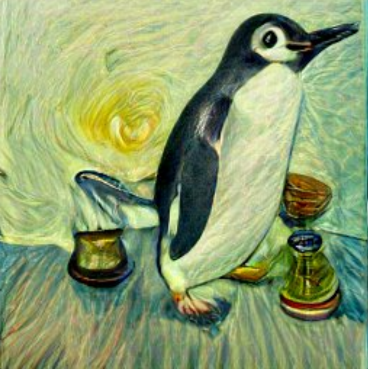

Penguin Soup

Image Source
When life gives you penguins, you make soup with penguins.
Careful, they have terrible breath. It's all that fish.
Ingredients
- 1 Penguin (up to 10 lbs, adult chinstrap)
- 2 Fish
- 2 Cups Cooking Oil
- 8 Qt Pot
- 1 Gallon Water
- 2 Garlic Cloves, diced
- 5 Onions, sliced
- 5 Carrots, sliced
- 10 Potatoes, chopped
- 0.5 oz Bay Leaves
- 5 Tbs Salt
Cooking Directions
- Place penguin on countertop and give one fish
- Heat cooking oil until boiling hot
- Add garlic and brown
- Carefully add water, salt, bay leaves, carrots, onions, and potatoes
- Bring to boil and simmer, covered, for 20 minutes
- Give penguin second fish for a job well done. That's a good penguin!
Back To Recipes